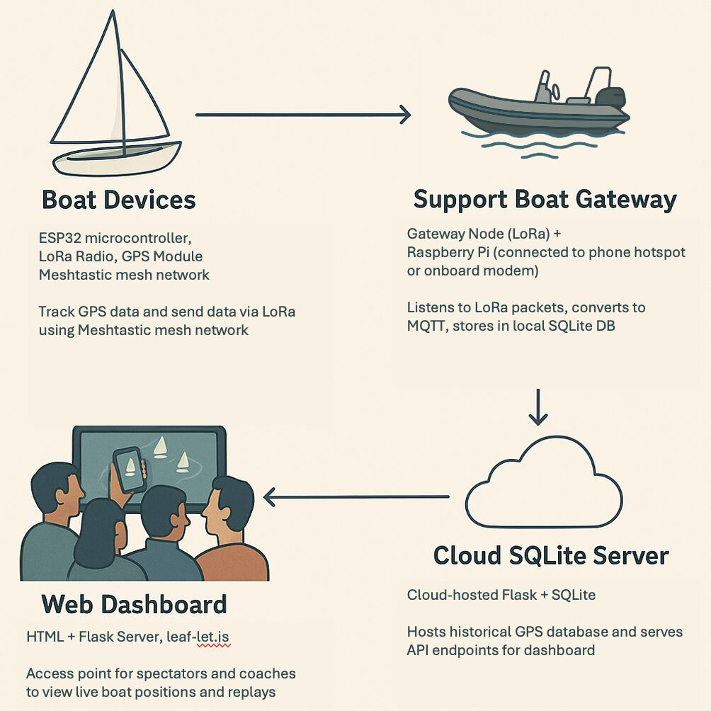
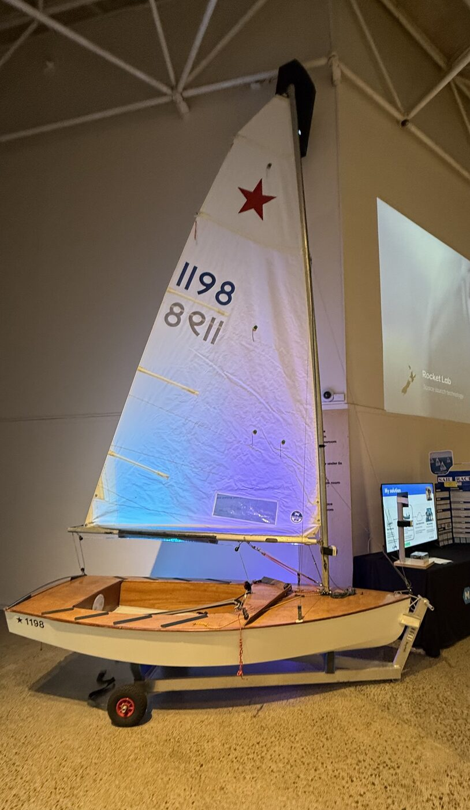

The solution
A complete, low-cost tracking system built on open-source tech.
Each boat carries a lightweight, waterproof LoRa GPS tracker. Positions hop across a radio mesh to a support-boat gateway and Raspberry Pi, then onto a live web dashboard anyone can open from the clubhouse — no SIM cards, no subscriptions.

How it flows
Boat → mesh → gateway → dashboard
A simple but powerful data flow turns raw GPS broadcasts into structured, replayable race data.
- Boat trackers broadcast GPS over long-range LoRa radio
- Data hops through a mesh to a support-boat gateway
- A Raspberry Pi collects, stores and serves the data
- A browser dashboard shows live & historical races

Watch from anywhere
A live web dashboard, on any phone or tablet
Built with Flask and Leaflet.js, the dashboard plots every boat on the map with trails, timing and race replay — so spectators stay engaged and coaches can review tactics afterwards.
- Live fleet view from any internet-connected device
- Trails, markers and race replay for post-race analysis
- No app to install — it's just a web page

The real thing
Designed, built and sailed.
This isn't a concept render — it's a working prototype, mounted on the boat and tested on the water with a real youth fleet.
- Waterproof tracker on a custom 3D-printed mast mount
- Survives capsizes and lasts a full race day
- Proven end to end, with no system failures in trials